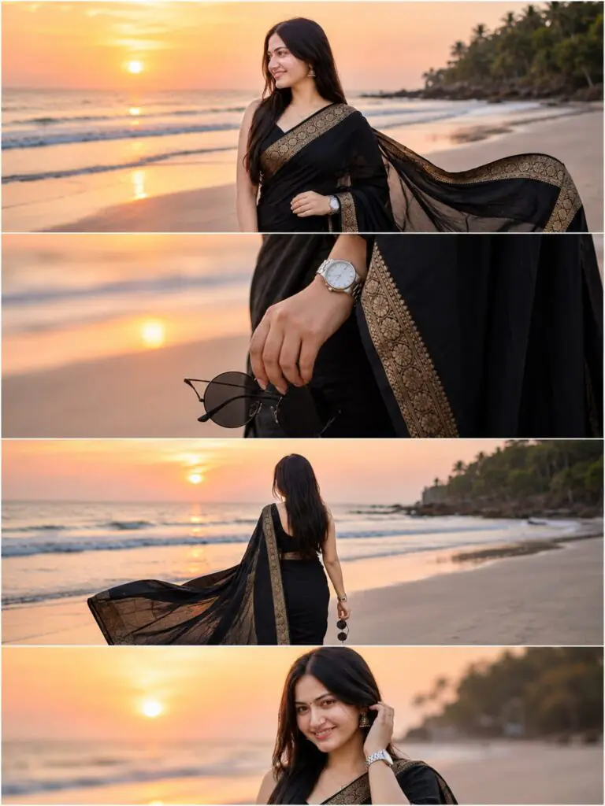
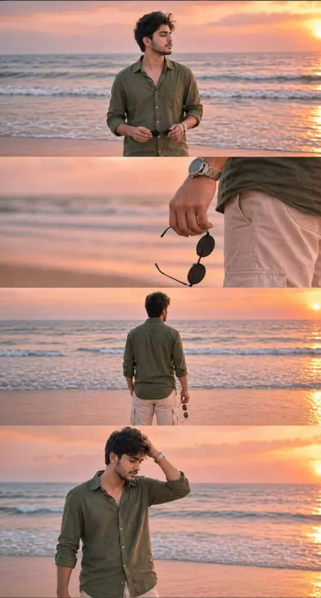

Cinematic beach collage photo editing is becoming very popular on Instagram and social media. Many creators use AI photo editing prompts to turn normal pictures into stylish DSLR-style beach photos with cinematic lighting, soft colors, and professional looks. These prompts help create eye-catching collage edits in just a few minutes.
A good cinematic beach collage prompt can improve photo quality, add sunset vibes, enhance skin tones, and create a luxury travel aesthetic. Whether you are editing for reels, stories, or posts, the right prompt helps achieve realistic and high-quality results without advanced editing skills.
In this article, you will learn how cinematic beach collage photo editing prompts work, why they are trending, and how to create stunning AI-generated beach edits easily.
Want more awesome prompts?
Join our community and get the latest viral prompts daily.
Follow on Instagram




Cinematic beach collage photo editing prompts make it easy to create professional and attractive social media photos. With the help of AI tools and detailed prompts, anyone can generate realistic beach photoshoots with cinematic effects, natural lighting, and trendy collage styles.
These prompts save time and help creators achieve high-quality edits without complex software or expert editing knowledge. From Instagram posts to reel covers, cinematic beach collage edits can improve your content and make your profile stand out.
Start experimenting with different prompts, poses, and beach aesthetics to create unique cinematic edits that match your personal style and social media theme.